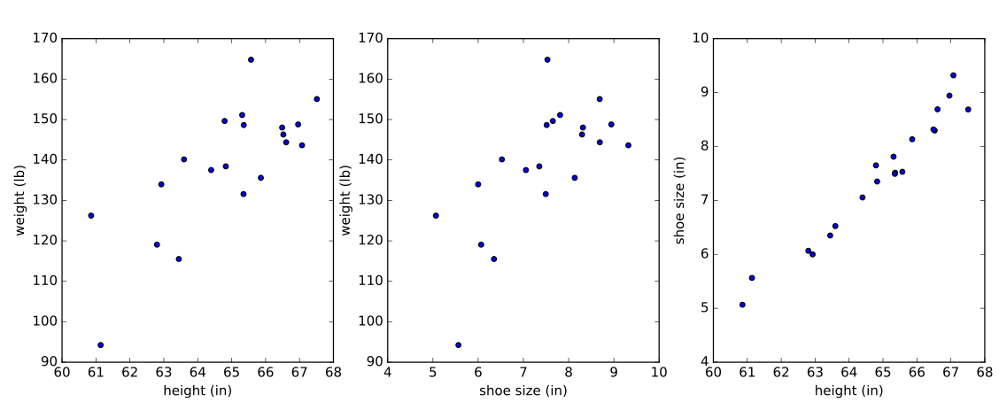

Our last post showed how to obtain the least-squares solution for linear regression and discussed the idea of sampling variability in the best estimates for the coefficients. In this post, we continue the discussion about uncertainty in linear regression -- both in the estimates of individual linear regression coefficients and the quality of the overall fit.
Specifically, we'll discuss how to calculate the 95% confidence intervals and p-values from hypothesis tests that are output by many statistical packages like python's statsmodels or R. An example with code is provided at the end.
Review
We wish to predict a scalar response variable \(y_i\) given a vector of predictors \(\vec{x}_i\) of dimension \(K\). In linear regression, we assume that \(y_i\) is a linear function of \(\vec{x}_i\), parameterized by a set of coefficients \(\vec{\beta}\) and an error term \(\epsilon_i\). The linear model (in matrix format and dropping the arrows over the vectors) for predicting \(N\) response variables is
The dimensions of each component are: dim(\(X\)) = (\(N\),\(K\)), dim(\(\beta\)) = (\(K\),1), dim(\(y\)) = dim(\(\epsilon\)) = (\(N\),1), where \(N\) = # of examples, \(K\) = # of regressors / predictors, counting an optional intercept/constant term.
The ordinary least-squares best estimator of the coefficients, \(\hat{\beta}\), was derived last time:
where the hat "^" denotes an estimator, not a true population parameter.
(\ref{optimal}) is a point estimate, but fitting different samples of data from the population will cause the best estimators to shift around. The amount of shifting can be explained by the variance-covariance matrix of \(\hat{\beta}\), also derived last time (independent of assumptions of normality):
Goodness of fit - \(R^2\)
To get a better feel for (\ref{cov}), it's helpful to rewrite it in terms of the coefficient of determination \(R^2\). \(R^2\) measures how much of the variation in the response variable \(y\) is explained by variation in the regressors \(X\) (as opposed to the unexplained variation from \(\epsilon\)).
The variation in \(y\), i.e. the "total sum of squares" \(SST\), can be partitioned into the sum of two terms, "regression sum of squares" and "error sum of squares": \(SST = SSR + SSE\).
For convenience, let's center \(y\) and \(X\) around their means, e.g. \(y \rightarrow y - \bar{y}\) so that the mean \(\bar{y}=0\) for the centered variables. Then,
where \(\hat{y} \equiv X\hat{\beta}\). Then \(R^2\) is defined as the ratio of the regression sum of squares to the total sum of squares:
\(R^2\) ranges between 0 and 1, with 1 being a perfect fit. According to (\ref{cov}), the variance of a single coefficient \(\hat{\beta}_k\) is proportional to the quantity \((X'X)_{kk}^{-1}\), where \(k\) denotes the kth diagonal element of \((X'X)^{-1}\), and can be rewritten as
where \(R_k^2\) is the \(R^2\) in the regression of the kth variable, \(x_k\), against the other predictors [A1].
The key observation from (\ref{cov2}) is that the precision in the estimator decreases if the fit is made over highly correlated regressors, for which \(R_k^2\) approaches 1. This problem of multicollinearity in linear regression will be manifested in our simulated example.
(\ref{cov2}) is also consistent with the observation from our previous post that, all things being equal, the precision in the estimator increases if the fit is made over a direction of greater variance in the data.
In the next section, \(R^2\) will again be useful for interpreting the behavior of one of our test statistics.
Calculating test statistics
If we assume that the vector of residuals has a multivariate normal distribution, \(\epsilon \sim N(0, \sigma^2I)\), then we can construct test statistics to characterize the uncertainty in the regression. In this section, we'll calculate
(a) confidence intervals - random intervals around individual estimators \(\hat{\beta}_k\) that, if constructed for regressions over multiple samples, would contain the true population parameter, \(\beta_k\), a certain fraction, e.g. 95%, of the time.
(b) p-value - the probability of events as extreme or more extreme than an observed value (a test statistic) occurring under the null hypothesis. If the p-value is less than a given significance level \(\alpha\) (a common choice is \(\alpha = 0.05\)), then the null hypothesis is rejected, e.g. a regression coefficient is said to be significant.
From the assumption of the distribution of \(\epsilon\), it follows that \(\hat{\beta}\) has a multivariate normal distribution [A2]:
To be explicit, a single coefficient, \(\hat{\beta}_k\), is distributed as
This variable can be standardized as a z-score:
In practice, we don't know the population parameter, \(\sigma^2\), so we can't use the z-score. Instead, we can construct a pivotal quantity, a t-statistic. The t-statistic for \(\hat{\beta}_k\) follows a t-distribution with n-K degrees of freedom [1],
where \(s(\hat{\beta}_k)\) is the standard error of \(\hat{\beta}_k\)
and \(\hat{\sigma}^2\) is the unbiased estimator of \(\sigma^2\)
Confidence intervals around regression coefficients
The \((1-\alpha)\) confidence interval around an estimator, \(\hat{\beta}_k \pm \Delta\), is defined such that the probability of a random interval containing the true population parameter is \((1-\alpha)\):
where \(\Delta = t_{1-\alpha/2, n-K} s(\hat{\beta}_k)\), and \(t_{1-\alpha/2, n-K}\) is the \(\alpha/2\)-level critical value for the t-distribution with \(n-K\) degrees of freedom.
t-test for the significance of a predictor
Directly related to the calculation of confidence intervals is testing whether a regressor, \(\hat{\beta}_k\), is statistically significant. The t-statistic for the kth regression coefficient under the null hypothesis that \(x_k\) and \(y\) are independent follows a t-distribution with n-K degrees of freedom, c.f. (\ref{tstat}) with \(\beta_k = 0\):
We reject the null-hypothesis if \(P[t] < \alpha\).
According to (\ref{cov2}), \(s(\hat{\beta}_k)\) increases with multicollinearity. Hence, the estimator must be more "extreme" in order to be statistically significant in the presence of multicollinearity.
F-test for the significance of the regression
Whereas the t-test considers the significance of a single regressor, the F-test evaluates the significance of the entire regression, where the null hypothesis is that all the regressors except the constant are equal to zero: \(\hat{\beta}_1 = \hat{\beta}_2 = ... = \hat{\beta}_{K-1} = 0\).
The F-statistic under the null hypothesis follows an F-distribution with {K-1, N-K} degrees of freedom [1]:
It is useful to rewrite the F-statistic in terms of \(R^2\) by substituting the expressions from (\ref{SS}) and (\ref{R2}):
Notice how, for fixed \(R^2\), the F-statistic decreases with an increasing number of predictors \(K\). Adding uninformative predictors to the model will decrease the significance of the regression, which motivates parsimony in constructing linear models.
Example
With these formulas in hand, let's consider the problem of predicting the weight of adult women using some simulated data (loosely based on reality). We'll look at two models:
(1) weight ~ height.
As expected, height will be a strong predictor of weight, corroborated by a significant p-value for the coefficient of height in the model.
(2) weight ~ height + shoe size.
Height and shoe size are strongly correlated in the simulated data, while height is still a strong predictor of weight. We'll find that neither of the predictors has a significant individual p-value, a consequence of collinearity.
First, import some libraries. We use statsmodels.api.OLS for the linear regression since it contains a much more detailed report on the results of the fit than sklearn.linear_model.LinearRegression.
import numpy as np
import statsmodels.api as sm
from scipy.stats import t
import random
Next, set the population parameters for the simulated data.
# height (inches)
mean_height = 65
std_height = 2.25
# shoe size (inches)
mean_shoe_size = 7.5
std_shoe_size = 1.25
# correlation between height and shoe size
r_height_shoe = 0.98 # height and shoe size are highly correlated
# covariance b/w height and shoe size
var_height_shoe = r_height_shoe*std_height*std_shoe_size
# matrix of means, mu, and covariance, cov
mu = (mean_height, mean_shoe_size)
cov = [[np.square(std_height), var_height_shoe],
[var_height_shoe, np.square(std_shoe_size)]]
Generate the simulated data:
# number of data points
n = 20
random.seed(85)
# height and shoe size
X1 = np.random.multivariate_normal(mu, cov, n)
# height, alone
X0 = X1[:, 0]
weight = -220 + np.random.normal(X0*5.5, 10, n)
Below is the simulated data plotted against each other.

{kind=link}
Fit the linear models:
# add column of ones for intercept
X0 = sm.add_constant(X0)
X1 = sm.add_constant(X1)
# "OLS" stands for Ordinary Least Squares
sm0 = sm.OLS(weight, X0).fit()
sm1 = sm.OLS(weight, X1).fit()
Look at the summary report, sm0.summary(), for the weight ~ height model.
OLS Regression Results
==============================================================================
Dep. Variable: y R-squared: 0.788
Model: OLS Adj. R-squared: 0.776
Method: Least Squares F-statistic: 66.87
Date: Wed, 29 Jun 2016 Prob (F-statistic): 1.79e-07
Time: 14:28:08 Log-Likelihood: -70.020
No. Observations: 20 AIC: 144.0
Df Residuals: 18 BIC: 146.0
Df Model: 1
Covariance Type: nonrobust
==============================================================================
coef std err t P>|t| [95.0% Conf. Int.]
------------------------------------------------------------------------------
const -265.2764 49.801 -5.327 0.000 -369.905 -160.648
x1 6.1857 0.756 8.178 0.000 4.596 7.775
==============================================================================
Omnibus: 0.006 Durbin-Watson: 2.351
Prob(Omnibus): 0.997 Jarque-Bera (JB): 0.126
Skew: 0.002 Prob(JB): 0.939
Kurtosis: 2.610 Cond. No. 1.73e+03
==============================================================================
The height variable, x1, is significant according to the t-test, as is the intercept, denoted const in the report. Also, notice the coefficient used to simulate the dependence of weight on height (\(\beta_1\) = 5.5), is contained in the 95% confidence interval of x1.
Next, let's look at the summary report, sm1.summary(), for the weight ~ height + shoe_size model.
OLS Regression Results
==============================================================================
Dep. Variable: y R-squared: 0.789
Model: OLS Adj. R-squared: 0.765
Method: Least Squares F-statistic: 31.86
Date: Wed, 29 Jun 2016 Prob (F-statistic): 1.78e-06
Time: 14:28:08 Log-Likelihood: -69.951
No. Observations: 20 AIC: 145.9
Df Residuals: 17 BIC: 148.9
Df Model: 2
Covariance Type: nonrobust
==============================================================================
coef std err t P>|t| [95.0% Conf. Int.]
------------------------------------------------------------------------------
const -333.1599 204.601 -1.628 0.122 -764.829 98.510
x1 7.4944 3.898 1.923 0.071 -0.729 15.718
x2 -2.3090 6.739 -0.343 0.736 -16.527 11.909
==============================================================================
Omnibus: 0.015 Durbin-Watson: 2.342
Prob(Omnibus): 0.993 Jarque-Bera (JB): 0.147
Skew: 0.049 Prob(JB): 0.929
Kurtosis: 2.592 Cond. No. 7.00e+03
==============================================================================
Neither of the regressors x1 and x2 is significant at a significance level of \(\alpha=0.05\). In the simulated data, adult female weight has a positive linear correlation with height and shoe size, but the strong collinearity of the predictors (simulated with a correlation coefficient of 0.98) causes each variable to fail a t-test in the model -- and even results in the wrong sign for the dependence on shoe size.
Although the predictors fail individual t-tests, the overall regression is significant, i.e. the predictors are jointly informative, according to the F-test.
Notice, however, that the p-value of the F-test has decreased compared to the simple linear model, as expected from (\ref{F2}), since including the extra variable, shoe size, did not improve \(R^2\) but did increase \(K\).
Let's manually calculate the standard error, t-statistics, F-statistic, corresponding p-values, and confidence intervals using the equations from above.
# OLS solution, eqn of form ax=b => (X'X)*beta_hat = X'*y
beta_hat = np.linalg.solve(np.dot(X1.T, X1), np.dot(X1.T, weight))
# residuals
epsilon = weight - np.dot(X1, beta_hat)
# degrees of freedom of residuals
dof = X1.shape[0] - X1.shape[1]
# best estimator of sigma
sigma_hat = np.sqrt(np.dot(epsilon, epsilon) / dof)
# standard error of beta_hat
s = sigma_hat * np.sqrt(np.diag(np.linalg.inv(np.dot(X1.T, X1)), 0))
# 95% confidence intervals
# +/-t_{1-alpha/2, n-K} = t.interval(1-alpha, dof)
conf_intervals = beta_hat.reshape(3,1) + s.reshape(3,1) * np.array(t.interval(0.95, dof))
# t-statistics under null hypothesis
t_stat = beta_hat / s
# p-values
# survival function sf=1-CDF
p_values = t.sf(abs(t_stat), dof)*2
# SSR (regression sum of squares)
y_hat = np.dot(X1, beta_hat)
y_mu = np.mean(weight)
mean_SSR = np.dot((y_hat - y_mu).T, (y_hat - y_mu))/(len(beta_hat)-1)
# f-statistic
f_stat = mean_SSR / np.square(sigma_hat)
print('f-statistic:', f_stat, '\n')
# p-value of f-statistic
p_values_f_stat = f.sf(abs(f_stat), dfn=(len(beta_hat)-1), dfd=dof)
print('p-value of f-statistic:', p_values_f_stat, '\n')
The output values, below, from printing the manual calculations are consistent with the summary report:
beta_hat: [-333.15990097 7.49444671 -2.30898743]
degrees of freedom of residuals: 17
sigma_hat: 8.66991550428
standard error of beta_hat: [ 204.60056111 3.89776076 6.73900599]
confidence intervals:
[[ -7.64829352e+02 9.85095501e+01]
[ -7.29109662e-01 1.57180031e+01]
[ -1.65270473e+01 1.19090724e+01]]
t-statistics: [-1.62834305 1.92275698 -0.34263027]
p-values of t-statistics: [ 0.1218417 0.07142839 0.73607656]
f-statistic: 31.8556171105
p-value of f-statistic: 1.77777555162e-06
The full code is available as an IPython notebook on github.
Summary
Assuming a multivariate normal distribution for the residuals in linear regression allows us to construct test statistics and therefore specify uncertainty in our fits.
A t-test judges the explanatory power of a predictor in isolation, although the standard error that appears in the calculation of the t-statistic is a function of the other predictors in the model. On the other hand, an F-test is a global test that judges the explanatory power of all the predictors together, and we've seen that parsimony in choosing predictors can improve the quality of the overall regression.
We've also seen that multicollinearity can throw off the results of individual t-tests as well as obscure the interpretation of the signs of the fitted coefficients. A symptom of multicollinearity is when none of the individual coefficients are significant but the overall F-test is significant.
Reference
[1] Greene, W., Econometric Analysis, Seventh edition, Prentice Hall, 2011 - chapters available online
Appendix
[A1]
We specifically want the kth diagonal element from the inverse moment matrix, \((X'X)^{-1}\). The matrix \(X\) can be partitioned as
where \(\vec{x}_k\) is an N x 1 column vector containing the kth variable of each of the N samples, and \(X_{(k)}\) is the N x (K-1) matrix containing the rest of the variables and constant intercept. For convenience, let \(X_{(k)}\) and \(\vec{x}_k\) be centered about their (column-wise) means.
Matrix multiplication of the block-partitioned form of \(X\) with its transpose results in the following block matrix:
The above matrix has four blocks, and can be inverted blockwise to obtain another matrix with four blocks. The lower right block corresponding to the kth diagonal element of the inverted matrix is a scalar:
Then the numerator of the fraction in the parentheses above can be simplified:
where \(\hat{\beta}_{(k)}\) is the OLS solution for the coefficients in the regression on the \(\vec{x}_k\) by the remaining variables \(X_{(k)}\): \(\vec{x}_k = X_{(k)} \beta_{(k)} + \epsilon_k\). In the last line, we used one of the constraints on the residuals -- that the residuals and predictors are uncorrelated, \(\epsilon_k'X_{(k)} = 0\). Plugging in this simplification for the numerator and using the definition of \(R^2\) from (\ref{R2}), we obtain our final result:
[A2]
The last line is by properties of affine transformations on multivariate normal distributions.